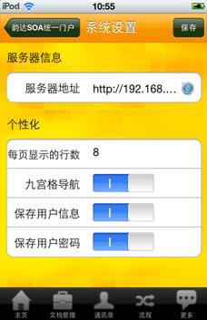
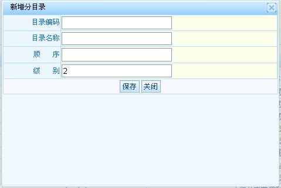
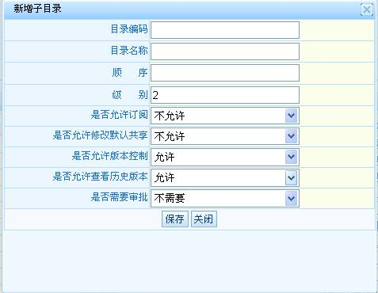

| 9.1.1.2 增加分目录、子目录、删除本目录 |
在分目录上右键点击有增加分目录、增加子目录、删除本目录等操作。

分目录右键菜单界面

增加分目录界面

增加子目录界面
是否允许订阅：在该目录下创建的文档，【允许订阅】指：没有权限查看该文档的操作者可以在【查询文档】列表中订阅该文档。【不允许订阅】指：没有权限查看该文档的操作者不能进行文档订阅操作。
是否允许修改默认共享：【允许修改】指文档创建者、文档所有者、文档完全控制者 可以对具体文档修改共享，但是具体文档的默认共享不能删除，只能增加、删除、修改除默认共享外的共享权限。【不允许修改】指在该目录下的文档只有默认共享权限。
是否允许版本控制：在该目录下创建的文档，如果是【允许版本控制】，如果是【不允许版本控制】则该目录下
是否允许查看历史版本：在该目录下创建的文档是否有【版本】查看功能。
是否需要审批：在该目录下创建的文档，提交时如果是【需要审批】则需要选择审批人，如果【不需要审批】则文档提交后自动变为发布状态。